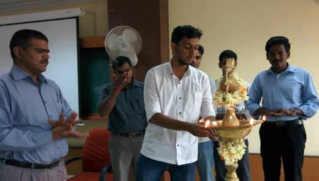
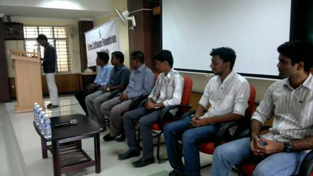
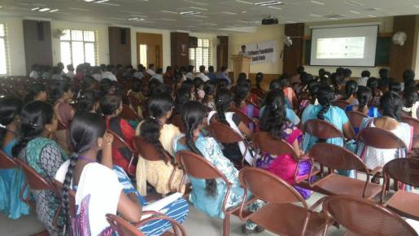

GLUG UCEV
Posted on Thu 03 July 2014 in Post
  
GNU/Linux Users Group was started in Aug 2, 2014. Me, Ragulkanth, Manimaran were organized and inaugurated the GLUG. The main objective of that GLUG is to enhance the technical knowledge of ourself and our friends by sharing and learning method and also there by creating awareness about existence of Free Softwares. GLUG UCEV is a part of Free Software Foundation Tamil Nadu. It is the first event organized by us. That was really an wonderful experience gained more knowledge and through that personally I have developed my leadership and management skill little. Though we have faced so many obstacals, we successfully inaugurated and also we learnt that how to coordinate the works of others.
Dr. Senthil Dean, UCEV has inaugurated the GNU/Linux Users Group. We got many volunteers from our college joined with us and helped us to make this event successfull. We have conducted various short sessions on various topics of Free Software such as GNU/Linux, Mozilla, etc. It was ended with a lots of knowledge.